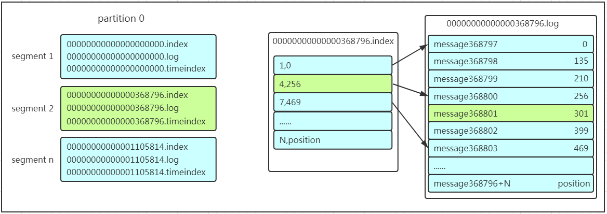

Kafka

Kafka
Kafka是一种高吞吐量的分布式发布订阅消息系统，它可以处理消费者规模的网站中的所有动作流数据，具有高性能、持久化、多副本备份、横向扩展能力……… 一些基本的介绍这里就不展开了，网上有太多关于这些的介绍了，读者可以自行百度一下！
基础架构及术语

- Producer：消息的生产者，是消息的入口。
- kafka cluster：
- Broker：broker是kafka的实例，每个服务器上有一个或多个kafka的实例，我们姑且认为每个broker对应一台服务器。每个kafka集群内的broker都有一个不重复的编号。
- Topic：消息的主题，可以理解为消息的分类，kafka的数据就保存在topic。在每个broker上都可以创建多个topic。
- Partition：Topic的分区，每个topic可以有多个分区，分区的作用是做负载，提高kafka的吞吐量。同一个topic在不同的分区的数据是不重复的，partition的表现形式就是一个一个的文件夹！
- Replication：每一个分区都有多个副本，副本的作用是做备胎。当主分区（Leader）故障的时候会选择一个备胎（Follower）上位，成为Leader。在kafka中默认副本的最大数量是10个，且副本的数量不能大于Broker的数量，follower和leader绝对是在不同的机器上，同一机器对同一个分区也只可能存放一个副本（包括自己）。
- Message：每一条发送的消息主体。
- Consumer：消费者，即消息的消费方，是消息的出口。
- Consumer Group：我们可以将多个消费者组组成一个消费者组，在kafka的设计中同一个分区的数据只能被消费者组中的某一个消费者消费。同一个消费者组的消费者可以消费同一个topic的不同分区的数据，这也是为了提高kafka的吞吐量！
- Zookeeper：kafka集群依赖zookeeper来保存集群的的元信息，来保证系统的可用性。
工作流程
发生数据
Producer在写入数据的时候永远找leader，不会直接将数据写入follower！写入的流程如下图所示：

消息写入learder后，follower是主动的去leader进行同步的！producer采用push模式将数据发不到broker，每条数据追加到分区中，顺序写入磁盘，所以保证同一分区内的数据是有序的！写入示意图如下图所示：

上面说到数据会写入不同的分区，那么kafka为什么要分区呢？
方便扩展：因为一个topic可以有多个partition，所以我们可以通过扩展机器去轻松的应对日益增长的数据量。
提高并发：以partiton为读写单位，可以多个消费者同时消费数据，提高了消息的处理效率。
熟悉负载均衡的朋友应该知道，当我们向某个服务器发送请求的时候，服务端可能会对请求做一个负载，将流量分发到不同的服务器，那在kafka中，如果某个topic有多个partition，producer又怎么知道该将数据发往哪个partition呢？kafka中有几个原则：
- 如果写入时指定了partition，那么直接使用指定的。
- 如果没有指定partition，但是设置了数据的key，那么根据key的值hash出一个partiton。
- 如果既没有指定partition又没有设置key，则会轮询出一个partiton。
保证消息不丢失是一个消息队列中间件的基本保证，kafka是如何保证消息不丢失的呢？其实上面的写入流程图中已经描述出来了，那就是通过ACK应答机制！在producer写入数据时可以通过设置参数来确定是否确认kafka接受到数据，这个参数的可设置的值为0、1、all。
- 0：代表producer往集群中发送数据不需要等到集群的确认，不确保消息发送成功。安全性最低但是效率最高。
- 1：代表producer往集群中发送数据只要等到leader的确认就可以发送下一条，只确保leader发送成功。
- all：代表producer往集群中发送数据需要所有的follower都完成从leader的同步才会发送下一条，确保leader发送成功和所有的副本完成备份。安全性最高但效率最低。
如果向不存在的topic中写数据，kafka会自动创建topic，分区和副本的数量根据默认配置是1。
保存数据
Producer将数据写入kafka后，集群就需要对数据进行保存了！kafka将数据保存在磁盘，可能在我们的一般的认知里，写入磁盘是比较耗时的操作，不适合这种高并发的组件。Kafka初始会单独开辟一块磁盘空间，顺序写入数据（效率比随机写入高的多）。
Partition结构
Partition在服务器上的表现形式就是一个一个的文件夹，每个partition的文件夹下面会有多组segment文件，每组segment文件又包含.index文件、.log文件、.timeindex文件（早期版本中没有）三个文件， log文件就实际是存储message的地方，而index和timeindex文件为索引文件，用于检索消息。

如上图，这个partition有三组segment文件，每个log文件的大小是一样的，但是存储的message数量是不一定相等的（每条的message大小不一致）。文件的命名是以该segment最小offset来命名的，如0000.index存储offset为0~368795的消息，kafka就是利用分段+索引的方式来解决查找效率的问题。
.index文件：偏移量索引文件，每个索引项共占用8个字节，并分为两部分。相对偏移量（offset）和物理地址（position）。
- 相对偏移量：表示消息相对与基准偏移量的偏移量，占4个字节。
- 物理地址：消息在日志分段文件中对应的物理位置，也占4个字节。
.log：日志文件，存储具体的消息。
.timeindex：时间戳索引文件，每个索引项共占用12个字节，并分为两部分。相对偏移量（4字节）和时间戳（八个字节）。
kafka采用稀疏存储的方式，因此.index和.timeindex文件并不会为没一条消息建立索引，而是每隔一定的字节数建立一条索引。
Message结构
上面说到log文件就实际是存储message的地方，我们在producer往kafka写入的也是一条一条的message，那存储在log中的message是什么样子的呢？消息主要包含消息体、消息大小、offset、压缩类型……等等！我们重点需要知道的是下面三个：
1. offset：offset是一个占8byte的有序id号，它可以唯一确定每条消息在parition内的位置！
2. 消息大小：消息大小占用4byte，用于描述消息的大小。
3. 消息体：消息体存放的是实际的消息数据（被压缩过），占用的空间根据具体的消息而不一样。
存储策略
无论消息是否被消费，kafka都会保存所有的消息。那么对于旧消息有什么删除策略呢？
- 基于时间，默认配置为7天。
- 基于大小，默认配置为1073741824。
需要注意的是，kafka读取特定消息的时间复杂度是O(1),所以删除过期的消息并不会提高kafka的性能！
消费数据
消息存储在log文件后，消费者就可以进行消费了。与生产消息相同的是，消费者在拉取消息时也是找leader去拉取的。
多个消费者可以组成一个消费者组（consumer group），每个消费者组都有一个组id！同一个消费者组的消费者可以消费同一个topic下的不同分区的数据，但不会组内多个消费者消费同一个分区的数据。

上图是消费者组内的消费者小于partition数量的情况，所以会出现某个消费者消费多个partition的情况，消费的速度不如只消费一个partition的速度。如果是消费者组的消费者多于partition的数量，那会不会出现多个消费者消费同一个partition的数据呢？上面已经提到过不会出现这种情况！多出来的消费者不消费任何partition的数据。所以在实际的应用中，建议消费者组的consumer的数量与partition的数量一致！
在保存数据的小节里面，我们聊到了partition划分为多组segment，每个segment又包含.log、.index、.timeindex文件，存放的每条message包含offset、消息大小、消息体……我们多次提到segment和offset，查找消息的时候是怎么利用segment+offset配合查找的呢？假如现在需要查找一个offset为368801的message是什么样的过程呢？我们先看看下面的图：（.index中的’,’是用来区分偏移量和物理地址的标记）

先找到offset为368801的message所在的segment文件（利用二分法查找），这里找到的就是在第二个segment文件。
打开找到的segment中的.index文件（也就是368796.index文件，该文件起始偏移量为368796+1，我们要查找的offset为368801的message在该index内的偏移量为368796+5=368801，所以这里要查找的相对offset为5）。由于该文件采用的是稀疏索引的方式存储着相对offset及对应message物理偏移量的关系，所以直接找相对offset为5的索引找不到，这里同样利用二分法查找相对offset小于或者等于指定的相对offset的索引条目中最大的那个相对offset，所以找到的是相对offset为4的这个索引。
- 根据找到的相对offset为4的索引确定message存储的物理偏移位置为256。打开数据文件，从位置为256的那个地方开始顺序扫描直到找到offset为368801的那条Message。
这套机制是建立在offset为有序的基础上，利用segment+有序offset+稀疏索引+二分查找+顺序查找等多种手段来高效的查找数据！至此，消费者就能拿到需要处理的数据进行处理了。那每个消费者又是怎么记录自己消费的位置呢？在早期的版本中，消费者将消费到的offset维护zookeeper中，consumer每间隔一段时间上报一次，这里容易导致重复消费，且性能不好！在新的版本中消费者消费到的offset已经直接维护在kafk集群的__consumer_offsets这个topic中！
Kafka中的ISR、AR代表什么？ISR的伸缩指什么？
ISR：In-Sync Replicas 副本同步队列AR:Assigned Replicas 所有副本
ISR是由leader维护，follower从leader同步数据有一些延迟（包括延迟时间replica.lag.time.max.ms和延迟条数replica.lag.max.messages两个维度，当前最新的版本0.10.x中只支持replica.lag.time.max.ms这个维度），任意一个超过阈值都会把follower剔除出ISR，存入OSR（Outof-Sync Replicas）列表，新加入的follower也会先存放在OSR中。
AR=ISR+OSR。